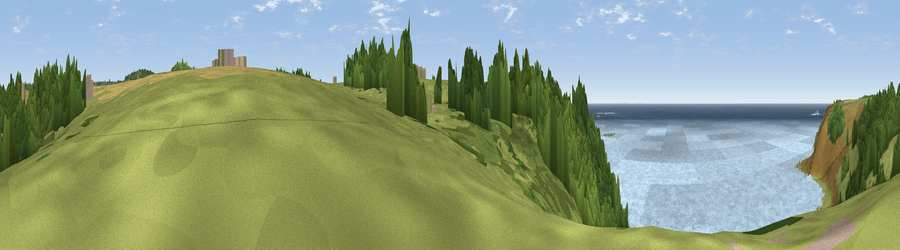

Viewpoint near Sennen Cove
#7329 in England · top 30% of its area beats it · near Sennen CoveWhere it is
The exact computed spot (SW 36428 27430). Click the marker for map links.
The view, rendered

A 360° render of this exact spot computed from the terrain model, tree cover and land cover — summer colours, afternoon light, calibrated against photographs of famous viewpoints. Real trees, hedges and buildings will differ in detail.
The panorama
Grey silhouette: terrain skyline in each direction (720 bearings, Earth curvature and refraction included). Dashed green: skyline with trees (+15 m) and buildings (+8 m) as obstacles. Blue strip: how far the ground is visible on each bearing.
Where the view opens
Wedge length = distance to the farthest visible ground on that bearing (vegetation-aware). Rings at 10, 25 and 50 km.
What fills the view
44% water · 25% grassland · 21% woodland · 9% bare ground ·
Angular shares of the visible panorama (visual magnitude), not map area. Landscape diversity 0.57 (0–1 Shannon).
Key numbers
More beautiful places nearby
The staircase of upgrades: each row has a higher view potential than everything closer. Driving times are estimates from straight-line distance, calibrated against real road routing — check an actual route before setting out.
| Place | Direction | Drive | Score |
|---|---|---|---|
| Viewpoint near Bosavern | NNW · 1 km | ~4 min | 69.8 |
| Viewpoint near Bosavern | ENE · 2 km | ~6 min | 82.4 |
| Viewpoint near Morvah | NNE · 10 km | ~19 min | 83.2 |
| Viewpoint near Porthmeor | NNE · 10 km | ~20 min | 84.8 |
| Rosewall Hill | NE · 17 km | ~30 min | 88.0 |
| Viewpoint near Combe Martin | NE · 172 km | ~193 min | 88.9 |
| Holdstone Hill | NE · 174 km | ~195 min | 90.2 |
| The Knoll | ENE · 225 km | ~240 min | 91.0 |
50.08838, -5.68618 · source: osm viewpoint · position refined by local search. Computed location — check access rights before visiting.